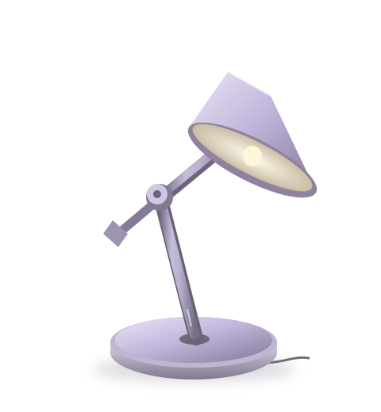
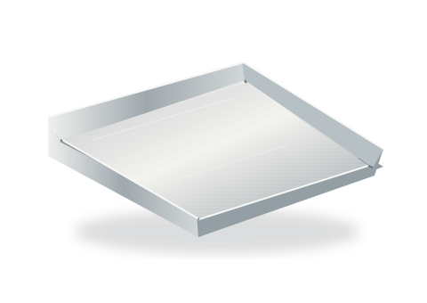
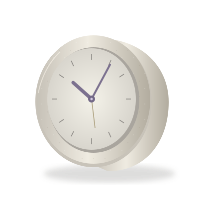
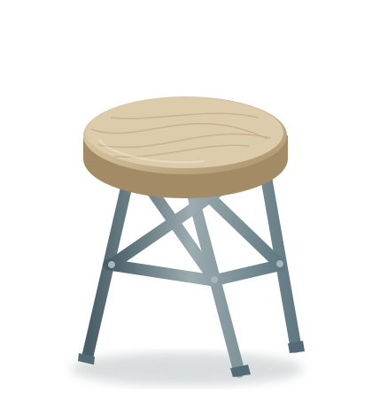
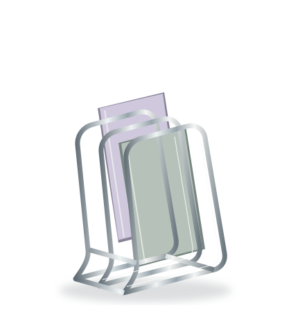
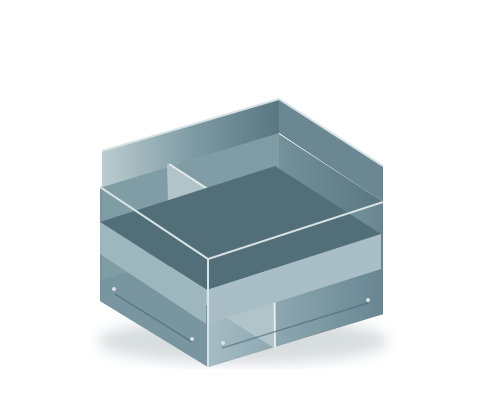

OBJECT STUDIES / COLLECTION 01Six forms for everyday spaces
01 / ARCH 465 mm

Arc 04
Counterweight desk lamp
Counterweight desk lamp
02 / FOLDH 38 mm

Fold 02
Correspondence tray
Correspondence tray
05 / MERIDIAN

Meridian 01
Shelf clock
Shelf clock
03 / FRAME

Frame 03
Workshop stool
Workshop stool
04 / LOOP

Loop 06
Folio rack
Folio rack
06 / GRID

Grid 05
Desktop organizer
Desktop organizer
A study in
useful objects
Six imagined industrial forms. Look at how they sit, what they’re made of, and the space they ask for.
Make a workspace shortlistA fictional archive. Prices are illustrative research references.
The register
01—06 / EXTERIOR DIMENSIONS| Object | W × D × H mm | Material | Reference USD | Record |
|---|---|---|---|---|
| FB-01Arc 04 counterweight desk lamp | 310 × 245 × 465 mm | Powder-coated aluminium, steel | 240.00 | Study edition |
| FB-02Fold 02 shallow correspondence tray | 285 × 195 × 38 mm | Brushed aluminium | 78.00 | Reference form |
| FB-03Frame 03 triangulated workshop stool | 360 × 340 × 445 mm | Powder-coated steel, ash | 185.00 | Study edition |
| FB-04Loop 06 freestanding folio rack | 245 × 170 × 320 mm | Chrome-plated steel | 96.00 | Archive record |
| FB-05Meridian 01 cylindrical shelf clock | 180 × 65 × 180 mm | Cast mineral composite, aluminium | 120.00 | Reference form |
| FB-06Grid 05 folded desktop utensil organizer | 210 × 140 × 125 mm | Anodised aluminium | 88.00 | Archive record |
A NOTE ON CONSIDERATIONA good form still
A good form still
needs a place
Start with the surface you already have. Measure its depth, leave room for the work you do, and compare the complete footprint of each object.
01
Look closelyFollow the edge, joint and material. Each specimen has a different structural idea.
02
Compare the spaceWidth, depth and height belong together. A tray’s low profile and a lamp’s reach ask different things of a desk.
03
Read the field guide Keep a considered setPrepare a shortlist with your own workspace note, then keep or download its current version.